Senior Data and Insights Analyst
Cheryl Tan
Australia · Singapore
I turn customer behaviour into decisions.
Lifecycle marketing analytics, predictive modelling and dashboards people actually use.
- Customer behaviourWho comes back, who drops off, and why. Lifecycle, retention and segmentation analytics.SQL · Python · Snowflake · dbt
- Predictive modellingModels that score customers and forecast outcomes, evaluated honestly.scikit-learn · XGBoost · PyTorch
- Dashboards people useClear, good-looking reporting built on tested data, with AI agents for the follow-up questions.Sigma · Tableau · Looker · Power BI
Selected workAll projects →
Where I am now, and how I got here
Have a data problem? Let's talk.
Data analytics · Machine learning · Analytics engineering
Cheryl Tan
Senior Data and Insights Analyst with a geneticist's rigour, bringing six years of marketing, customer and lifecycle analytics. I turn complex data into dashboards, predictive models and AI agents that leaders act on.
- 6 yearsin data, after an early career in marine genetics
- 5+ industriesfood, aesthetics, automotive, insurance and gaming
- 3 disciplinesanalytics, data engineering and AI
Research
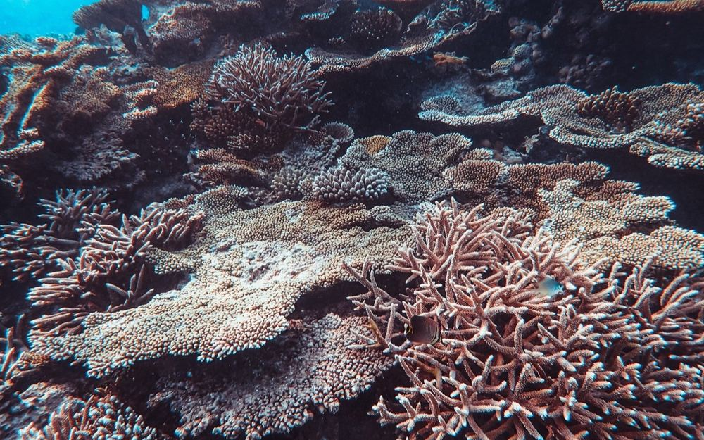
10 recommendations for strengthening citizen sciencePLOS ONE · 2026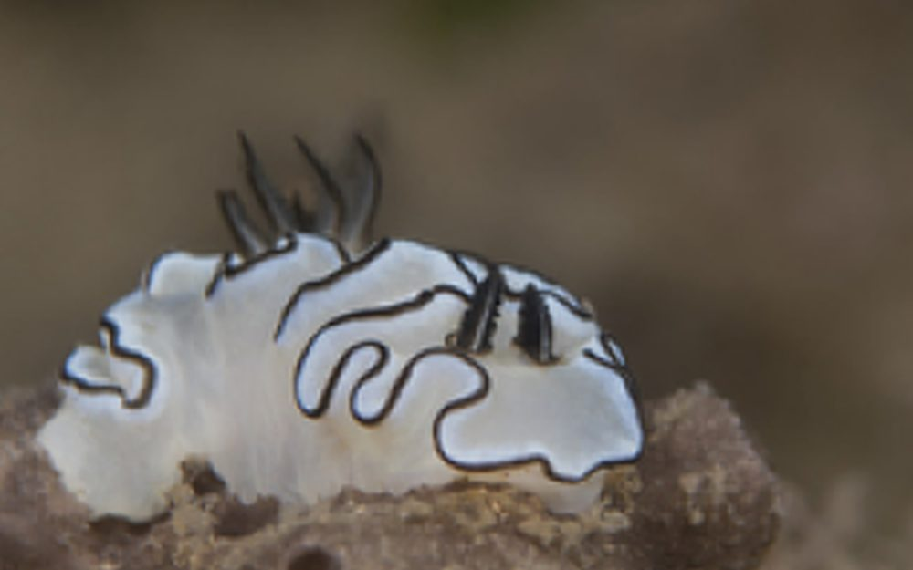
The paper on 7NEWS TownsvilleTV coverage · 2026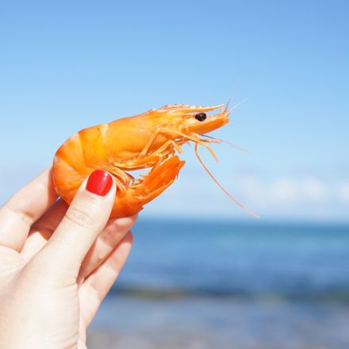
Viral transmission in prawnsAquaculture genetics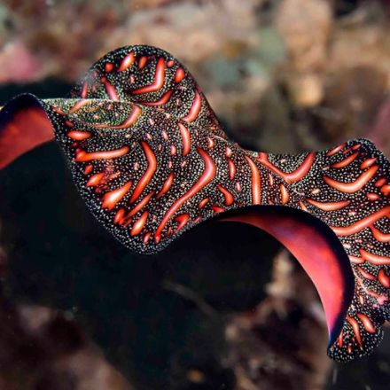
Invertebrates of the Coral SeaHeron IslandData in Bytes
Follow @data_in_bytes on InstagramCarousel explainers that make one data idea easy to grasp, using everyday examples.
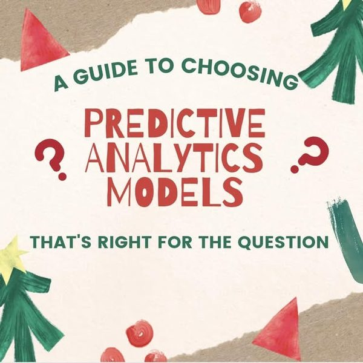
Choosing a predictive modelMachine learning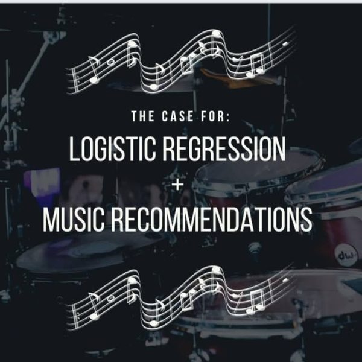
Logistic regression and music recommendationsMachine learning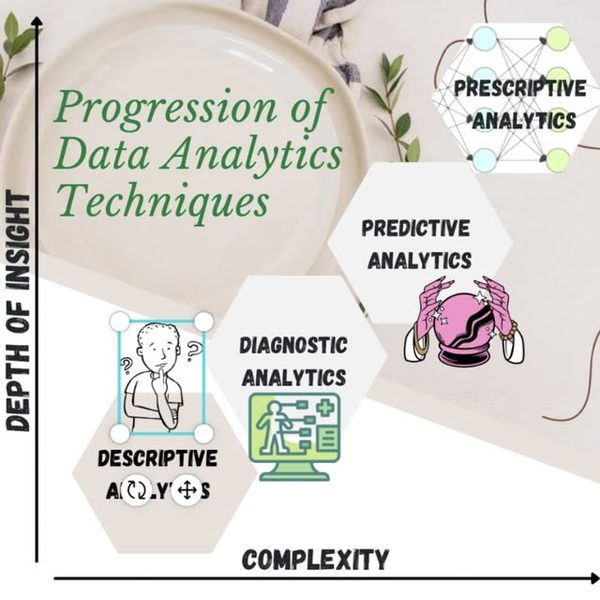
From descriptive to prescriptive analyticsAnalytics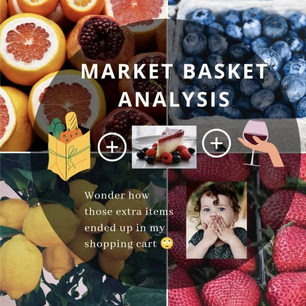
Market basket analysisRetail How aggregator sites workWeb data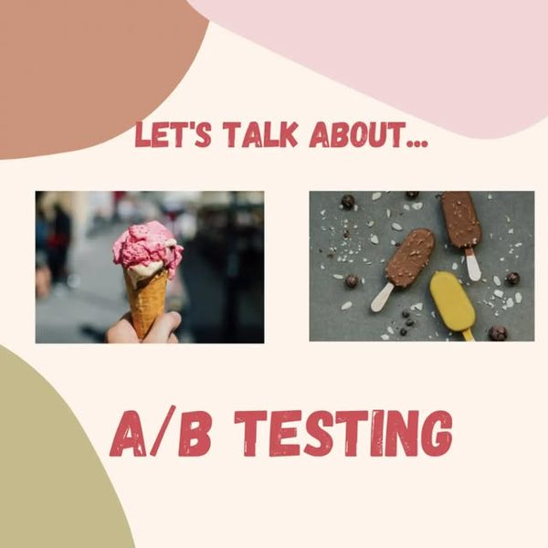
A/B testingExperiments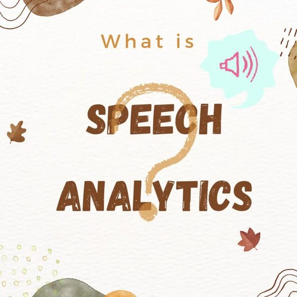
What is speech analytics?NLP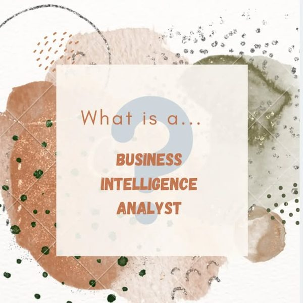
What a BI analyst doesCareers